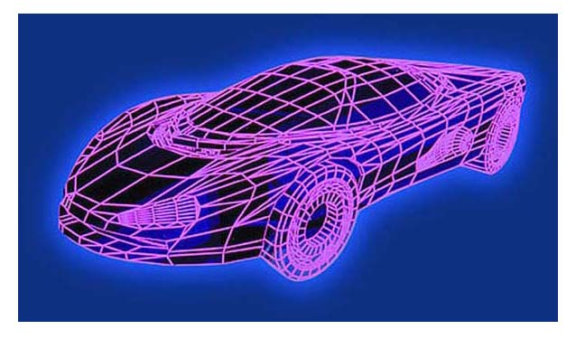

21st
Century Cars Hit the Road
From on-board radar and Wi-Fi to electronic steering,
amazing technologies already here or soon coming promise to
create a new automotive era
Last year, General Motors (GM) made a splash with a concept
car called Hy-wire that features Nintendo-style handgrips
for steering, plus brakes and an accelerator that work electronically
instead of via pressure from the driver's foot. Tired of driving?
Hand the controls to your passenger for awhile.
That's pie in the sky for now, but come 2012 or 2015 a surprising
amount of it may be for real. Cars will still have a steering
wheel. They'll also probably still have a conventional gasoline
engine instead of the Hy-wire's fuel-cell-and-hydrogen powerplant.
Bernd Bohn, a top executive at Robert Bosch, the huge German
auto-components company, recently predicted that internal
combustion engines will still have 95% of the market in 2015
and 85% in 2025.
MORE PROMISE THAN EVER.
Electronics will have replaced most mechanical systems, however,
and even midrange models will be bristling with sensors, cameras,
computer screens, and Wi-Fi connections -- the result of a
new era in automobile technology that's just dawning. One
indication of the changing times is that over the past two
years Bosch has nearly tripled,
to 300, the number of its development engineers working on
driver-assistance systems, a fancy name for advanced electronics.
Another sign is the comparison drawn by John Heywood, director
of the Sloan Automotive Laboratory at the Massachusetts Institute
of Technology: "I've been involved [with auto research]
for more than 30 years, and there's more action and more promise
for improvement now than I've ever seen." Among the advances
that seem likely within the next decade:
- Safety systems will move from passive protection, such
as airbags, to active systems that use radar and cameras
to watch for danger. "We've put airbags just about
every place you can," notes John Weiner, a U.S. product-planning
manager at Toyota (TM ). "Within the next five years,
the car will use algorithms to anticipate hazards and intervene
or warn the driver."
- Car keys will be replaced by credit-card style systems
already used in some Cadillacs, Infinitis, and BMWs. Already,
says Michael Gautier, North American director of corporate
technology for Siemens VDO Automotive, the auto components
and systems unit of the German electronics giant Siemens
(SI ), keyless entry is set to debut on some 40 different
cars over the next three years.
- Every new car will come with a computer-like screen mounted
on the dash. It'll display a navigation system that uses
a global positioning satellite plus onboard DVDs to provide
directions, maps, and information on hotels, hospitals,
and restaurants. The video screen also "will show you
certain features within the car and connect to other devices
such as PDAs and cell
phones," says Thilo Koslowski, San Jose (Calif.)-based
lead vice-president in the automotive group for business-advisory
firm Gartner G2.
- Nearly every car will have a Wi-Fi hookup that automatically
provides the weather, news, and other information. "We're
going to see hot spots in places like gas stations and restaurants,"
predicts Peter Wengert, a marketing manager for automotive
products at Microsoft (MSFT ), which is pushing Windows
Automotive as a software standard for handling the new communications
functions in cars.
- Cars will increasingly collect data that can be shared
with dealers, manufacturers, and even other vehicles. Dealers
or manufacturers, for instance, may do remote diagnostics
to help troubleshoot a roadside breakdown.
- Within 15 years, the average vehicle will be equipped
with 10 to 15 cameras to help parents keep an eye on their
kids and help drivers detect blinds spots, Siemens' Gautier
predicts. Many cars may have cameras in the front bumper
to "see" around corners as the driver eases out
of a driveway or alley.
- Cars with 40-volt electrical systems will become the
standard because today's 12-volt systems can't easily accommodate
all the new electronic gizmos.
- Voice commands, already used in some BMWs, Jaguars, and
Lexuses, will become far more common to help drivers juggle
the proliferating functions in their cars.
- Brake-by-wire and accelerate-by-wire -- where pressing
the pedal sends an electronic signal rather than activating
a physical connection to the engine or brakes -- will become
common. All Mercedes models have used brake-by-wire since
1994, and the Chevy Corvette and all recent Audis already
have electronic gas pedals. Emergency-brake handles will
be replaced by an electronic switch, as they have been already
in many luxury cars.
- Increasingly, cars will be programmable. "We have
a vision that you can use electronics to let you choose
what kind of vehicle you want to drive," says Chris
Gerdes, a professor of mechanical engineering at Stanford
University. "You can have it be sporty or luxurious,
as you choose."
On the new Audi A8, each driver can program in not only
his or her seat and steering-wheel settings but raise and
lower road clearance to change the car's "ride"
as well (see "Tooling Around in Teutonic Technocars").
Ron Miller, project leader for Intelligent Vehicle Technologies
at Ford (F ), predicts that by 2010 most new vehicles will
have reconfigurable speedometer and other displays with changeable
type size -- for aging baby boomers who don't want to wear
glasses while driving. "Today it's probably a $400 option,"
Miller says. "In a year or two it will be $200"
and will drop from there.
HOW
MAY I HELP YOU? All of these changes will
arrive at different times in different countries, in part
because of geographic and cultural differences, among them
the general litigiousness of American society. In the U.S.,
carmakers fear added legal liability if an accident occurs
despite the intervention of a safety system. Rollover scares
such as the Ford Explorer's will help boost the share of new
vehicles sold in North America with electronic stability control
systems -- which studies show save lives -- from 5% to 12%
by 2005, Bosch estimates. But the figure is already 50% in
Germany (where a tipsy Mercedes [DCX ] model scared drivers
in 1997), 20% in France, and about 12% in Italy, Bosch figures.
The rush is on to build into cars many of the features now
offered by GM's OnStar in-car communications system. OnStar,
which has more than 2 million U.S. subscribers, delivers numerous
services to their cars, from help in an emergency to weather
reports and stock quotes. But it uses costly human operators
to do much of the communicating, and it's expensive -- subscriptions
cost $16.95 to $69.95 per month.
Rivals are hoping to automate OnStar-style services and
offer them for free. In Germany, drivers can now sign up for
a "floating car data" project, in which vehicles
zap information to a computerized traffic-information center
that alerts drivers if congestion is ahead, for example.
TOO-AGGRESSIVE?
Adding Wi-Fi capability to cars is a cheap way to vastly expand
such capabilities -- and not just so drivers can get weather
updates, sports scores, and e-mail. German auto makers envisage
a distributed, car-to-car communications system in which vehicles
will poll
on-coming traffic and pass data from car to car and alert
drivers up and down the highway to accidents and weather conditions,
says Tobias Nickel, a BMW spokesman in Munich. An international
consortium of auto companies and parts suppliers is already
coming up with standards for such a system.
Meanwhile, so-called lane-departure warning systems are
hitting the market in Japan. Typical is the one on the Inspire,
an Accord-like Honda sold overseas with an optional "collision
mitigation system" priced at $2,000 to $3,000. It warns
a driver whose car goes over the white line and also has a
radar system that monitors the traffic ahead. In a potential
front-end collision, it flashes the lights, starts braking,
and even executes a panic stop.
Rival automakers wonder how readily adaptable such systems
are to the U.S. market. Michael Lembke, Audi's (VLKAY ) marketing
director for North America, recently tested one Japanese system
and contends that "it has a lot of little things U.S.
consumers wouldn't like." The intervention's aggressiveness
might turn Americans off, for one. Also, U.S. road markings
are far less uniform than in Japan, and the snowfalls in places
like Minnesota and North Dakota far heavier. When J.D. Power
& Associates queried consumers about paying an extra $1,100
or so for such systems, it found considerable price resistance,
according to research director Jeremy
Bowler.
THIRST
FOR POWER. Similarly, it isn't clear which
new fuel-saving technologies will make the fastest inroads
in the U.S. The industry is split over which way to go, with
Japanese outfits mainly pushing hybrid gasoline-electric vehicles,
such as Toyota's Prius and Honda's Civic, while the Germans
stress high-mileage diesel engines, which will have an estimated
44% share of Europe's new-car market this year. (The Germans
also plan to start selling hydrogen- and gasoline-powered
hybrids domestically within three years, but hydrogen is unlikely
to make a dent
in the market for years to come.) GM and Ford, meanwhile,
are planning for hybrids, diesel, and hydrogen models.
The key question may be whether the trend toward ever bigger,
more powerful U.S. vehicles is finally peaking. Over the past
15 years, computerized engine management and other new technologies
have helped make engines 30% more efficient, the U.S. Environmental
Protection Agency estimates. But average fuel efficiency has
declined because the gains have been offset by the introduction
of bigger engines to power ever larger SUVs and pickup trucks.
The average engine sold in the U.S. is now 165 horsepower,
up 63% in the last 20 years, Siemens' Gautier notes. "U.S.
drivers love a sense of power, and that's not going to disappear,"
he adds.
SIMPLER TRANSMISSIONS.
Even if vehicles and engines simply stay the same size, new
technology can cut average fuel consumption by one-third by
2020 and half by 2030, MIT's Heywood estimates. Hybrids and
diesels will be an important factor. But most of the gains
will come from wringing more efficiency out of gasoline engines.
Next year, GM plans to start phasing in engines that use
a technology called "displacement on demand," which
cuts an engine's average fuel consumption by 8% by using only
half its cylinders during most normal driving. GM expects
2 million such engines to be in use by 2008. Engines with
new, more advanced variable valve controls from BMW and other
manufacturers will result in further fuel savings.
Another innovation is the continuously variable automatic
transmission, which GM figures can cut fuel consumption by
7% to 11%. These also have 45% fewer parts than conventional
four-speed automatics and are now being offered on some Saturn
and Audi models.
MORE
OOMPH. Bosch has developed yet another gas-hoarding
device, a system that allows the engine to shut off when a
car is idling at a stop light or in traffic
jams. Its new Directstart system can instantly restart the
engine when the driver hits the gas pedal by igniting the
combustion mixture in the fuel-injection system without engaging
the starter motor. Bosch figures Directstart can cut a vehicle's
fuel consumption by up to 5%.
Performance won't necessarily suffer. One advantage of diesel
and electric engines is that they have high torque at low
speeds -- quick pickup. Toyota's new Lexus RX 330 sport-utility
vehicle, for instance, is the first hybrid with "the
performance of a V8 and the mileage of a compact car,"
Weiner says. Both GM and BMW are experimenting with small
electric motors designed to save fuel while maintaining oomph
by giving conventional engines a boost at low speeds.
Best of all, the innovative technologies may not force prices
up much: The average new vehicle in the U.S now costs $25,400,
including finance charges, yet the median income Americans
spend on a new car has dropped to 20 weeks of pay, from 30
weeks a decade ago, according to Detroit-based Comerica Bank.
BIG DISTRACTIONS.
Moreover, some of the latest technology takes cost out of
a car. Electronic parking brakes may cost about the same as
mechanical ones, but they take up less cabin space, thus giving
designers new latitude, as well as having a safety advantage
over handbrakes: They go on automatically when the car is
idling or stopped on a hill. "You reduce
complexity and warranty [claims], add features, and because
it's electronic it won't cost any more," says Ford's
Miller.
The newest technologies do have some drawbacks. One is just
how well a driver can concentrate in a car larded with CD
and video players, navigation systems, cell phones, and other
gizmos. Internet access -- which can be delivered via the
navigation system screen -- is already
coming to market in Japan and parts of Europe. "We're
technically capable of doing it today, [but] we truly believe
it could be unsafe," says Audi's Lembke. "We took
it out of our cars because we felt it was pushing the limits
of driver distraction."
Privacy issues will arise, too. If cars start to record
and transmit data on things like speed, where the driver has
been, and whether the wipers were on in a storm, then the
family car could become a snitch on its driver.
DRIVERS STILL NEEDED.
The new features will also test the limits of consumers' confidence
in technology. For instance, replacing exterior rear-view
mirrors with cameras would increase fuel economy by 3% to
5% at highway speeds, Gautier says, but he calls the idea
"controversial." Would drivers accept seeing the
road behind them partly via images on a screen?
Another key test is steering-by-wire. BMW is introducing
the closest thing yet to such an option on its new 5-series
sedans. It uses electronics and a planetary gear box to help
with steering but also has a conventional steering system
as a backup. Many experts expect steering columns to
disappear eventually, though that will probably require regulatory
approval. "Most customers won't even know about it,"
contends Joseph Phillippi, head of AutoTrends Consulting in
Short Hills, N.J. "Only car buffs will know that there's
no physical connection between the steering wheel and the
front end."
Will cars ever drive themselves? Probably not for a few
decades. Replacing humans is a tremendously complex software
problem, Stanford's Gerdes says. "Fully automated driving
is one of those things that since the 1940s has always been
15 years in the future," he adds. "We never seem
to get there."
That can wait. The changes that are just around the corner
will be amazing enough.
By Thane Peterson, a contributing editor at BusinessWeek
Online
Copyright 2000-2003, by The McGraw-Hill Companies Inc. All
rights reserved
Other Technook Articles:
|